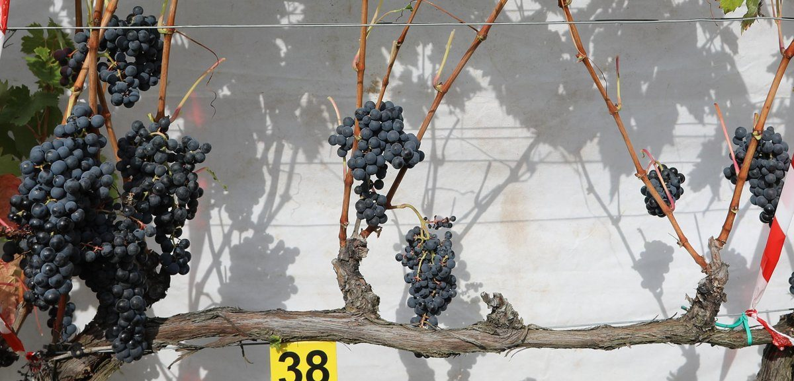
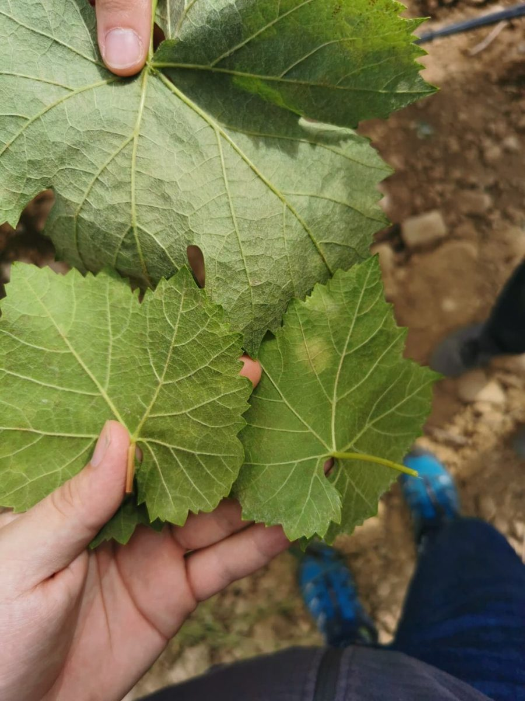
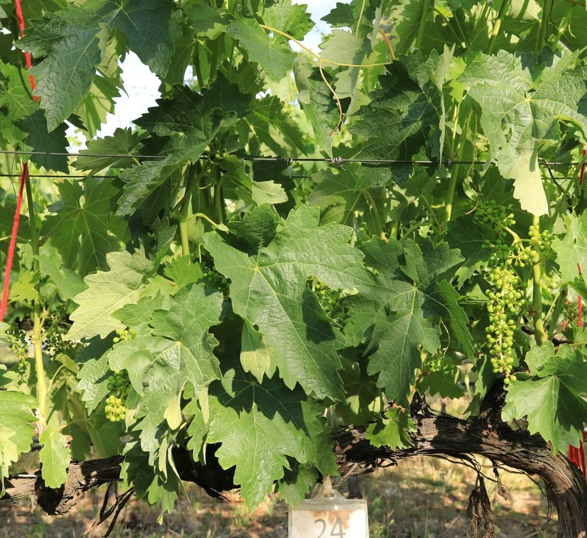

Juegos
Retos para comparar tu ojo con el de la inteligencia artificial, con imágenes reales de viñedos de La Rioja.
Ahora te toca a ti: tres retos para jugar ya
Cada reto tiene tres partes: antes, para entender el problema; jugar, con imágenes reales de viñedos de La Rioja; y después, para ver qué hace la ciencia y dónde falla.

Contar¿Cuántos racimos hay?
Calcula cuántos racimos hay en cinco cepas y comprueba cuántos escondían las hojas.
- Antes: por qué importa contar racimos.
- Jugar: cinco cepas, con y sin hojas.
- Después: qué hace la IA y qué no ve.

Detectar¿Mildiu o no?
Diez imágenes del viñedo: ¿ves el Mildiu: Enfermedad de la vid causada por un organismo parecido a un hongo (Plasmopara viticola). Se ve como manchas amarillentas, «de aceite», en el haz de las hojas.? Después, comprueba dónde estaba exactamente.
- Antes: qué es el mildiu y qué síntomas buscar.
- Jugar: diez imágenes reales de viñedo.
- Después: dónde estaba y dónde falla la IA.

Reconocer¿En qué fase está la vid?
Brotes, flores, bayas verdes, uvas maduras: sitúa cada foto en la línea del tiempo del viñedo.
- Antes: las etapas de la escala E-L.
- Jugar: ocho fotos y una línea del tiempo.
- Después: qué distingue una IA de una persona.
Y esto es solo el principio
La plataforma crecerá con la investigación. Estos son los próximos retos en los que ya se está trabajando: todavía no se pueden jugar, pero puedes ver en qué consistirán y en qué investigación se apoyan.
- Próximamente
¿Cuánto pesa este racimo?
Un racimo, una foto y una pregunta: ¿cuántos gramos crees que pesa?
Saber más sobre «¿Cuánto pesa este racimo?» - Próximamente
¿Qué enfermedad es?
Oídio, yesca… otras amenazas del viñedo que también se aprenden a reconocer.
Saber más sobre «¿Qué enfermedad es?» - Próximamente
¿Qué variedad es?
Tempranillo, Garnacha, Graciano… ¿distingues una variedad por su hoja?
Saber más sobre «¿Qué variedad es?» - Próximamente
¿Qué cepa tiene sed?
Las plantas también sufren sequía. Una cámara térmica ve lo que el ojo no nota.
Saber más sobre «¿Qué cepa tiene sed?» - Próximamente
Colores que no vemos
La luz que no percibimos esconde información sobre la uva antes de probarla.
Saber más sobre «Colores que no vemos»